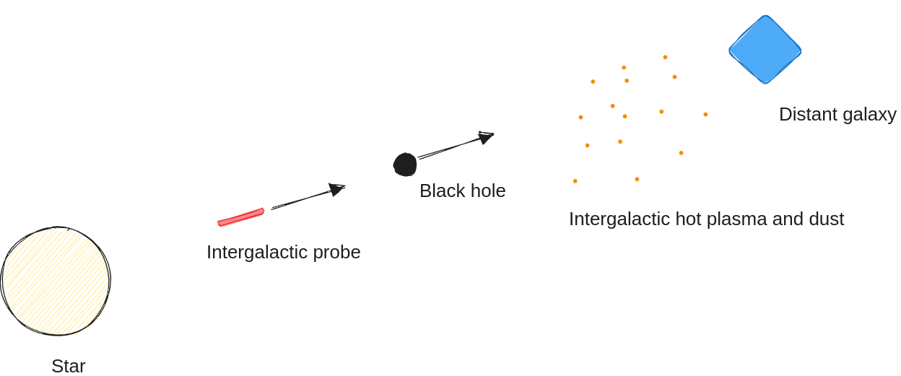

author: niplav, created: 2024-11-15, modified: 2025-09-16, language: english, status: in progress, importance: 6, confidence: unlikely
One might be able to solve two problems far-future civilizations will face (most baryonic matter is intergalactic hot plasma; intergalactic high-c probes are damaged by dust) with one idea—use black holes as shielding.
Baryons make up only 4.5% of the current massenergy of the universe, and >80% of that baryonic massenergy is intergalactic dust or plasma—mostly hydrogen and helium with temperatures from to , and if compressed to water density would have temperatures from to (Sandberg 2023, p. 746).
We or our descendants might care a lot about this massenergy, since if we can't use dark matter or dark energy, it would represent most of the resources available in the universe.
So it would be cool if we had a method of collecting this intergalacic plasma & dust, and ideally one that fulfills these properties:
For intergalactic colonization, an advanced civilization would want to move through intergalactic space at very high speed—the closer to , the better. But at such velocities, collisions with dust and even small particles create explosions releasing as much energy as a hand grenade. This makes it necessary for intergalactic probes to be either (1) very redundant, (2) require large amounts of shielding, or (3) have a very small cross-section; ideally all three. (I often imagine probes that look less like traditional spaceships but kilometer-long cylinders with a cross-section of a few centimeters, the first 30% of the probe being shielding.)
For a black hole civilization, one option for intergalactict probes is to send a black hole in the same path and at almost the same speed as the probe.

At any point during the journey, the probe is in the path that has been cleared of dust and intergalactic hot plasma by the black hole, which absorbs the plasma and dust and simply increases in mass1. The heat of the intergalactic medium would be converted to the mass of the black hole, as black holes don't have any temperature and are excellent heat sinks; instead they emit Hawking radiation in the black body spectrum.
Depending on the ability to set the speed accurately, the black hole could be accelerated to a terminal velocity slightly slower than the probe, so that at the time of arrival at the destination galaxy the probe ends up close to the black hole to be able to then steer it.
For the black hole to actually clear the path, it needs to have a Schwarzschild radius that is as large or larger than the cross-section of the probe. This puts strong pressure on making the cross-section of the probe as small as possible; the Schwarzschild radius of a Earth-mass black hole is only 9mm, and that of a Jupiter-mass black hole is 2.82m.
How does this fare on our list of criteria?
Black hole mops would have some other disadvantages:
Despite having mostly listed downsides of black hole mops, I think they're a possible option to do further research on.
I don't know whether such constructions are possible or desirable, but I would like to hear some feedback by someone more knowledgeable about physics.
Instead of clearing the flight path of the probe with a single black hole, one option to fulfill some of the criteria for collecting the IGM and shielding a probe would be to create intergalactic "ships" that are composed of a coordinating, baryonic center and a "shell" of black holes orbiting that center, moving at high speed through the intergalactic medium, in a setup similar to a Dyson swarm. Alternatively, the setup could be two or more black holes orbiting each other, with the baryonic center stationary at a Lagrange point where it is shielded by one or more of the black holes in the direction of travel.
This, but with black holes instead of mirrors. Sandberg 2023, p. 460
I don't know whether the intergalactic medium is charged, if so the black hole would also accumulate charge. I assume that on a macroscopic scale the intergalactic medium is fairly evenly distributed, so I don't think it'd accumulate angular momentum. ↩